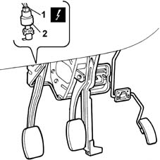
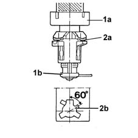
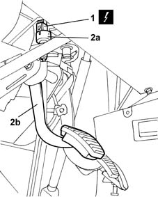

1060G42 clutch pedal switch - r r
- Path
- Procedures > 10 ENGINE UNIT > 1060 DIESEL FUEL INJECTION > 1060G pressure pump electric control > 1060G42 clutch pedal switch - r r
- Kind
- repair procedure (removal / refitting; the operation number is the code)
- Applies to
- engines: 1.9 JTD 8V; all production periods
- Interactive page
- https://sloeber94.github.io/elrnDB-fMltpl/en/#/2891417
Applies to: engines: 1.9 JTD 8V; all production periods
 Removing
Removing
 Refitting
RefittingEnsure that the ignition key is in the OFF position, then disconnect the negative battery terminal (-).
 | Name | Connector |
|---|---|---|
- | Battery |
1. Disconnect the electrical connection from the switch on the clutch pedal.
| Name | Connector |
|---|---|---|
1 | Clutch pedal switch |
2. Rotate the switch on the clutch pedal through about 60° in an anti-clockwise direction until the retaining tooth is heard releasing; then remove the switch from the pedal assembly.

Applies to: engines: 1.9 JTD 8V; all production periods
Refitting
Removing1. Keep the clutch pedal pressed, then place the new switch (1a) in the housing on the clutch pedal after having removed the spacer (1b).
2. Rotate the switch by about 60 degrees in a clockwise direction until the retaining tooth (2a) can be heard engaging in the special housing in the bracket (2b).

Applies to: engines: 1.9 JTD 8V; all production periods
Press the clutch pedal through its full travel to allow the switch to bed in.
Press the clutch pedal again to check that there is clearance between the end of the switch body and the pedal plate.
Connect the electrical connection to the switch on the clutch pedal.
| Name | Connector |
|---|---|---|
- | Clutch pedal switch |
Connect the negative (-) battery terminal.
Applies to: engines: 1.9 JTD 8V; all production periods; only with equipment: Euro 3
Removing
RefittingDisconnect the battery negative terminal.
1. Disconnect the electrical connection from the switch on the clutch pedal.
| Name | Connector |
|---|---|---|
1 | Clutch pedal switch |
2. Undo and remove the switch (2a) from its housing above the clutch pedal (2b).

Applies to: engines: 1.9 JTD 8V; all production periods; only with equipment: Euro 3
Refitting
RemovingFit the switch on the clutch pedal.
Connect the electrical connection.
| Name | Connector |
|---|---|---|
- | Clutch pedal switch |
Connect the battery negative terminal.